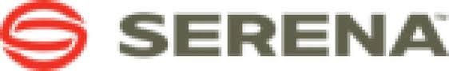

Nordics & Baltics Marketing Manager & Global Head of Social Media at Serena Software
July 2008 - March 2013
As the first marketer in the region I started and build out the marketing strategy and operations for the Nordics & Baltics.
Areas of company expertise include:
- Cloud
- SAAS
- REL-ALM
- Mainframe
- ALM
- BPM
- Scrum
Responsibilities Include:
- Nordic Budget, Quota & Revenue
- Lead generating activities and campaigns for the Nordics
- Assisting global marketing with local knowledge for Nordics& Baltics Global participation
- Arrange Seminars and events
- Brand Awareness - e-mail, processed brochure ect.
- Manage Serena´s Partner ́s in the Nordics
- PR for the region
- Customer success group
Started, built strategy and ran Social Media on a Global level.
- Own Serena Software´s Twitter, Facebook, LinkedIn and YouTube.
- Content creation, strategy owner and team lead
Interim DACH Marketing manager.
- Co-ran Nordics and DACH during 8 months while Serena looked for a replacement.
- Manage DACH budget and quota, events and online.
- Travel weekly to Germany
Project Manager and Driver.
Quality Initiative: Buzz
- Drive internal quality and culture to create, encourage and enable global collaboration and success.
Travel US and EMEA frequently